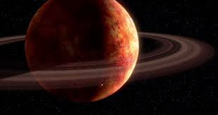

Géonosis
Orbitant autour de l'étoile Ea, Géonosis est l'une des six planètes du système qui porte son nom. Le système de Géonosis est compris dans le secteur Arkanis, lui-même situé dans la Bordure extérieure. Bien qu'étant une planète tellurique, elle a la particularité d'être entourée d'un anneau d'astéroïdes. La surface de Géonosis est recouverte de plaines désertiques rocailleuses et de montagnes. Son ciel est, à l'instar du sol, rouge.

| Apparaît dans : | L'Attaque des clones |
|---|---|
| Environnement : | Bordure extérieure planète-désert |